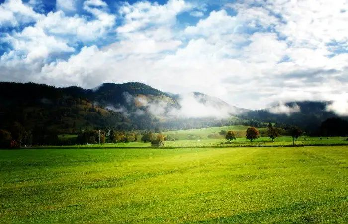

O que é Êxodo Rural?
O êxodo rural se refere à migração das pessoas do campo para a cidade em busca de melhores oportunidades de vida. Este fenômeno tem ocorrido ao longo das ultimas décadas, especialmente no Brasil, onde muitos deixaram suas terras em busca de trabalho e melhores condições de vida nas áreas urbanas.
 Descubra
Descubra
Causas do Êxodo Rural
As principais causas do êxodo rural incluem:
- Falta de emprego no campo:Muitas áreas rurais enfrentam a escassez de oportunidades de trabalho.
- Condições precárias de vida:A falta de infraestrutura, como água potável e energia elétrica, leva muitos a preocupar melhores condições nas cidades.
- Atração por oportunidadesvurbanas:as cidades oferecem uma variedade de maior de empregos e serviços.
- Aumento da mecanização agrícola:O uso crescente de tecnologia na agricultura reduz a necessidade de mão de obra rural.
Consequências do Êxodo Rural
O êxodo rural traz diversas consequências tanto para áreas rurais quanto para as urbanas, incluindo:
- Crescimento desordenado das cidades:O aumento da população urbana pode levar a problemas como favelização e falta de serviços básicos.
- Desertificação das áreas rurais:Com menos habitantes, muitas regiões ficam abandonadas e sem cultivo.
- Aumento de competitividade no mercado urbano:A chegada em massa de migrantes pode pressionar os salários e aumentar o desem prego nas cidades.
- Mudanças Culturais:A migração pode levar à mistura cuktural, mas também à oerda das tradições locais.

Impacto no Brasil
No Brasil, o êxodo rural é um fenômeno significativo que impacta diretamente a dinâmica social e econômica do país. As grandes cidades, como São Paulo e Rio de Janeiro, têm visto um influxo contínuo de pessoas do campo. Isso resulta em um crescimento populacional acelerado, mas também traz desafios como a necessidade urgente de habitação, transporte e serviços públicos adequados.
